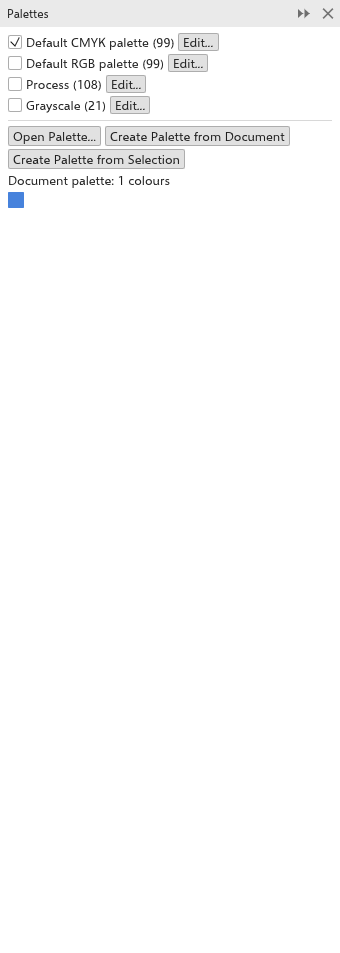
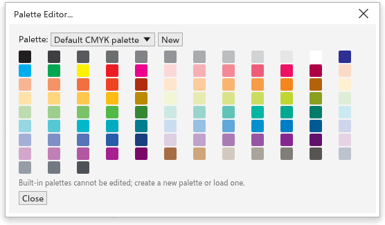

এই পৃষ্ঠাটি এখনও অনূদিত হয়নি এবং ইংরেজিতে দেখানো হচ্ছে।
Color palettes
The color palette along the bottom of the window is the quickest way to color objects. Below it, the document palette collects the colors your drawing uses. You can open more palettes, make your own and edit them.
Using the palette
| Action | Result |
|---|---|
| Click a color | fills the selection (with nothing selected, sets the fill of new objects) |
| Right-click a color | colors the outline of the selection |
| Ctrl+click a color | mixes a tenth of it into the selection's fill |
| Click and hold a color | shows lighter, darker, duller and brighter shades of it to choose from |
| Drag a color onto an object | fills the object, or colors its outline when dropped on the edge |
| Click the crossed-out well | removes the fill (right-click: the outline) |
The arrows at the ends scroll the palette, and the button at the right end shows every color at once. Hover a color to see its name and values. The palette menu button at the left end opens the palette menu. The mouse wheel over the palette scrolls it; with Ctrl held, the wheel makes the swatches larger (wheel up) or smaller (wheel down), from 8 to 48 px, and the size is remembered. The palette menu's Swatch Size offers five sizes, from Extra Small to Extra Large, and Rows shows 1 to 8 rows of swatches, or Fit for as many as show every color.
The palette can be moved to another edge of the window, or made to float: drag it by its dotted grip. With two or three rows, the window showing every color opens clear of all the rows.
Several palettes
You can have several palettes open at once, each in a bar of its own: tick one in Window > Color Palettes, click its eye in the Palette Manager, or pick it from Open as Palette Bar in a palette's menu. The document palette can have a bar of its own too.
- Each bar can go to any edge of the window (along the left and right edges its swatches stand in columns) or float in a small window: drag it by its dotted grip or its title, or pick a place from Position in its menu.
- Drag the right or bottom edge of a floating palette to resize it: the swatches flow into rows in a wide window and into columns in a tall one.
- Each bar has its own Swatch Size and Rows.
- Close Palette in its menu, or the close button of its window, closes it.
- The palettes you have open, where they are, their sizes and rows are remembered, and saved in workspace files.
Naming palettes
Any palette, built in or the document palette too, can have a name of your own: choose Rename... in its menu or in the Palette Manager, or double-click its name there. The name shows everywhere the palette is listed; Reset Name gives back its own name. Built-in palettes' files are never changed; a palette of yours saved as .gpl or .tdpal keeps the name in its file.
Along each side it can lie at the window's edge or beside the drawing, between the drawing and the panels or the toolbox on that side. When a side has two columns of panels (drag a panel's tab just inside its column, over the drawing, to make a second one), the palette can also lie between the two columns. While you drag it, a blue band shows where it will go; right-click its grip to pick a place from a list.
The document palette
Every color you apply to an object joins the document palette, which is saved with the drawing. Its eyedropper adds the color under the pointer, and its menu has Automatically update (to stop adding colors by themselves), Add from selection, Add from document, Delete color and Reset palette (keeps only the colors the drawing still uses). You can also drag colors or objects onto it. The color used last has a white frame: a color taken with the eyedropper that the palette already has gets the frame, so you see where it is, and applying a color of the palette moves the frame to it. To show or hide it, see Customization options.
The Palettes panel
The Palettes panel lists the palettes you have in three sections, Built-in, My Palettes and Document Palette. Open it with Window > Color Palettes > Palette Manager.

- Each palette shows its first colors, how many colors it has, its color model and where it is shown. Click the eye to open it in a bar of its own, or to close its bar.
- Click a palette to select it: the Swatch Size slider then sizes the swatches of its bar as you drag (the ticks are the five named sizes), and Rows sets its rows.
- The three-dot button, or a right-click, opens the palette's menu: open or close its bar, Edit, Rename..., Reset Name, Duplicate, Lock (palettes you opened or made, so the palette editor cannot change them; Unlock allows editing again), Delete Palette (palettes you opened or made; the file stays), Move Up and Move Down. You can also drag a palette to another place in its section.
- Type in the filter box to list only the palettes whose name holds it.
- The buttons by the filter box: Open Palette opens a palette file (
.tdpal,.gpl,.aseor.aco; opening the same file again does not add a second copy); Create Palette from Document and Create Palette from Selection fill the document palette with the colors of the drawing or of the selection. - The document palette's colors show in its section; click one to fill the selection, right-click to color the outline. Add Selection Colors, Add from Document and Clear change it.
Editing a palette
Window > Color Palettes > Palette Editor opens the palette editor.

- Choose the Palette to edit, or click New to start one.
- Type its Name.
- Click a color to select it; Add color adds the current color and Remove color removes the selected one.
- Click Save palette to save it as a file.
- Click Close.
Built-in palettes cannot be edited; make a new palette, or edit a copy.